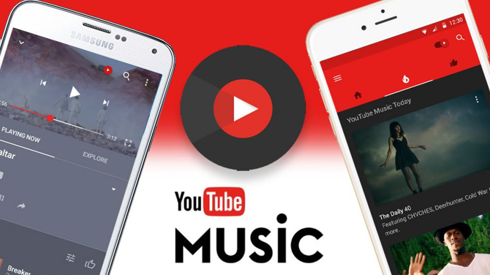
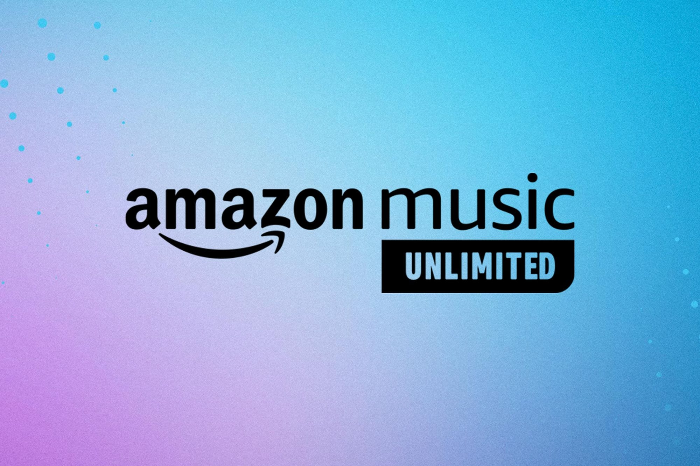

YouTube Videos

Mit der YouTube Music App genießen Sie über 100 Millionen Songs direkt zur Hand, dazu Alben,
Playlists, Remixes, Musikvideos, Live-Auftritte, Cover und schwer zu findende Musik,
die Sie sonst nirgendwo bekommen.
Spotify

Spotify ist ein digitaler Musikdienst, der dir Zugriff auf Millionen von Songs ermöglicht.
Amazon Musix

Suche und streame Musik und Podcasts über den Webbrowser.
Höre dir deine liebsten Playlists aus über 100 Millionen Songs bei Amazon Music Unlimited an.